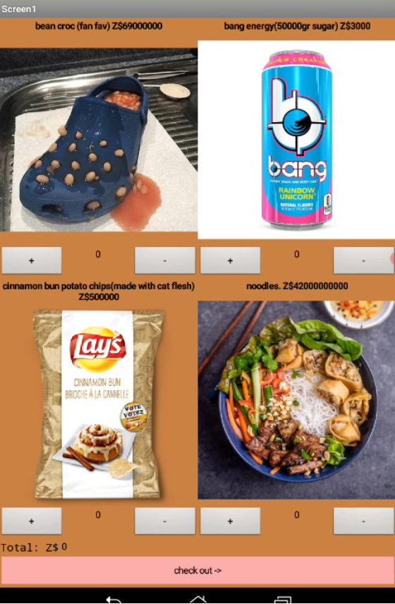

For this unit we worked with the MIT app inventor. I made my own online food ordering business. With Laurel's Fine Dining Establishment, patrons can add items to their basket, confirm payment, and checkout. The currency used at my restuarant is Zimbabwean dollars, which is done to make patrons be more consious about the needless money they spend on gourmet food. In this capitalistic world, we hold "Michelin" star restuarants and "gourmet" food to higher standards, and we are willing to pay more just because "Gordon Ramsey" made it. This project is to prove that people will buy anything if it looks expensive, even if it is bang energy. This project gave me more expirence with formatting and how coding is used to make my everyday apps.